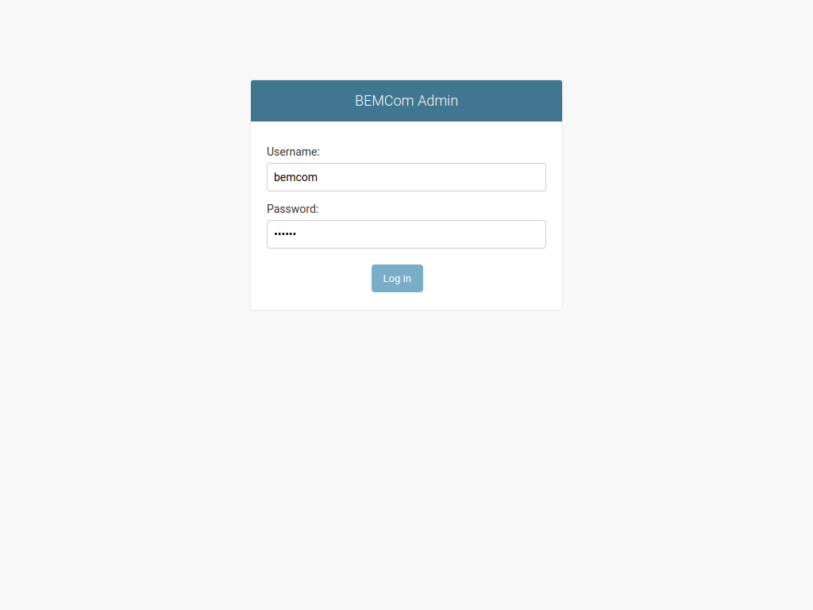

Creating BEMCom Applications
Recalling the application concept, it is apparent that a functional and building specific HAL instance will require one API service (including the metadata database), one message broker, one or more connector services, and optionally a raw message database service. The BEMCom repository provides fully functional implementations of an API service, a message broker and a raw message database which should be sufficient for most applications, thus effectively removing the burden of implementing these services from the user. All available services, including a number of connector services, can be found in the services folder in this repository.
Leveraging the design concepts of BEMCom, i.e. the service oriented approach and the execution of services as Docker containers, creating an application is reduced to simply configuring and starting the selected services.
Creating Applications with Docker
This is a minimal example showing how a functional BEMCom application can be created by manually starting each service via a shell command, which should work on any machine having Docker installed. Please note that the more convenient way to achieve the same result by utilizing Docker Compose is subject to the following section.
In order to demonstrate the full functionality of BEMCom it is certainly necessary to begin with a device to communicate with. To that end we provide a Demo Device service reflecting a simple Modbus device which can be interpreted as a single room for which the temperature is measured and an actor (say an AC system that can heat and cool) exists to manipulate the room temperature. However, before the first service is started it is necessary to create a Docker network to allow communication between the services.
docker network create bemcom-demo
After the Docker network exists, it is possible to start the Demo Device with:
docker run -d --network bemcom-demo --name bemcom-demo-device bemcom/demo-device-tool:0.1.0
Here the -d flag will cause Docker to run the Demo Device in the background, --network bemcom-demo will connect the container to the previously created network and --name bemcom-demo-device will assign the network name bemcom-demo-device to the container. To confirm that the Demo Device has been started successfully execute:
docker logs bemcom-demo-device
Which should create an output similar to this one:
docker-entrypoint.sh: Starting up
2022-02-03 09:06:04,884-run-INFO: Current temperature: 21.0
Each BEMCom application requires a central message broker service to allow communication between the remaining services. The broker can be launched using the following command:
docker run -d --network bemcom-demo --name bemcom-demo-mqtt-broker bemcom/mosquitto-mqtt-broker:0.1.0
Checking the container logs with docker logs bemcom-demo-mqtt-broker indicates the correct operation by displaying:
1643880100: mosquitto version 1.6.10 starting
1643880100: Config loaded from /mosquitto/config/mosquitto.conf.
1643880100: Opening ipv4 listen socket on port 1883.
1643880100: Opening ipv6 listen socket on port 1883.
In order to establish communication between the Demo Device and the message broker it is necessary to spin up the corresponding connector, in this particular case that is the Modbus/TCP connector provided in the BEMCom repository, by typing:
docker run -d --network bemcom-demo --name bemcom-demo-modbus-tcp-connector -e MQTT_BROKER_HOST=bemcom-demo-mqtt-broker -e MQTT_BROKER_PORT=1883 -e CONNECTOR_NAME=bemcom-demo-modbus-tcp-connector -e MODBUS_MASTER_IP=bemcom-demo-device -e MODBUS_MASTER_PORT=502 -e POLL_SECONDS=5 -e MODBUS_CONFIG='{"read_input_registers": [{"address": 1,"count":1,"unit": 1,"datatypes": "e"}],"write_register": [{"address": 1,"unit": 1,"datatypes": "<e","example_value": "22.0"}]}' bemcom/modbus-tcp-connector:0.5.0
Albeit this shell command may look far more complex then the ones introduced above, it is actually very similar. The only difference is that the connector service is additionally configured via environment variables, that is what follows -e, to account for specific settings of the device and the application. In particular, these variables can be interpreted as:
MQTT_BROKER_HOST=bemcom-demo-mqtt-broker: Configures that the connector should connect to the MQTT broker with the network namebemcom-demo-mqtt-broker, i.e. the name that has been given in the command above.MQTT_BROKER_PORT=1883: Specifies that the MQTT broker expects a connection on port1883, that is the default value for MQTT.CONNECTOR_NAME=bemcom-demo-modbus-tcp-connector: Defines the internal name (i.e. the root topic) asbemcom-demo-modbus-tcp-connectorfor the information exchange on the broker between the connector and other services.MODBUS_MASTER_IP=bemcom-demo-device: Specifies the network name or IP address of the Modbus/TCP device that the connector will attempt to communicate with tobemcom-demo-device, i.e. the name that has been given in the command above.MODBUS_MASTER_PORT=502: Defines that the demo device expects connections on port502, which is the default value for Modbus/TCP.POLL_SECONDS=5: Declares that the connector should request the configured sensor values (see below) every five seconds by polling the device.MODBUS_CONFIG='{"read_input_registers": ... }': Configures the Modbus registers which the connector will attempt to read from or write to. In particular, the connector is set up to handle a single sensor datapoint for input register1and a single actuator datapoint for holding register1. It is worth noting here that the concept of registers is specific to Modbus and that the information which information is exposed on which register is device specific and usually described in the documentation belonging to the device.
At this point it is important to highlight two important properties about the configuration of BEMCom services via environment variables:
It is solely necessary to change the environment variables to adapt a BEMCom service for a particular application or to a specific device. If one would need to connect a second different Modbus device to the demo application above for example, it is intended to use the same image of the Modbus/TCP connector with adjusted environment variables. It is thus possible to very quickly establish connection to even larger numbers of devices if suitable connectors for those exist.
Which environment variables are available varies per BEMCom service. A documentation about how to configure each service utilizing those variables is provided in the documentation of the services. Regarding the current example, the documentation of the Modbus/TCP connector provides additional details for each environment variable including e.g. extensive discussion how to define the
MODBUS_CONFIGvariable correctly.
Before moving on it is again a good idea to verify the correct operation of the connector by inspecting the logs with docker logs bemcom-demo-modbus-tcp-connector, which should yield an output similar to:
2022-02-03 11:22:19,416-_get_stream-INFO: Python-dotenv could not find configuration file .env.
2022-02-03 11:22:19,416-parse_modbus_config-INFO: Parsing MODBUS_CONFIG.
2022-02-03 11:22:19,417-_get_stream-INFO: Python-dotenv could not find configuration file .env.
2022-02-03 11:22:19,417-__init__-INFO: Initiating pyconnector.Connector class for: bemcom-demo-modbus-tcp-connector
2022-02-03 11:22:19,417-__init__-INFO: Changing log level to INFO
2022-02-03 11:22:19,421-run-INFO: Connector online. Entering main loop.
At this point only an API service is missing to form a fully functional BEMCom application. The following command allows to create a container with such a service:
docker run -d --network bemcom-demo -p 8080:8080 --name bemcom-demo-django-api -e MQTT_BROKER_HOST=bemcom-demo-mqtt-broker -e MQTT_BROKER_PORT=1883 -e DJANGO_SUPERUSER_USERNAME=bemcom -e DJANGO_SUPERUSER_PASSWORD=bemcom -e DJANGO_SUPERUSER_EMAIL=bemcom@example.com -e DJANGO_ALLOWED_HOSTS='["*"]' bemcom/django-api:0.6.10
Similar to the connector service above, the API service is configured via environment variables to connect the the message broker. Additionally three environment variables starting with DJANGO_SUPERUSER_ are exposed to the service which define the login credentials and email address of an administrator user. The latter allows to configure which datapoints of the devices will be used by the BEMCom application, to edit the metadata of these datapoints but also allows administration of access control mechanisms to prevent the REST interface of the API service from unauthorized usage. The values of these three variables are obviously not suitable for any productive use and should be changed for any non demo application. This also holds for DJANGO_ALLOWED_HOSTS variable, which is security relevant, but not important to understand for the sake of demonstrating a simple BEMCom application. Additional details on this and all available environment variables are provided in the documentation page of the API service.
In order to verify that the API service operates as intended, one can inspect the logs once more with docker logs bemcom-demo-django-api which will generate a longer output. The important line to check for should look like this:
2022-02-07 08:48:47,751-daphne.server-INFO: Listening on TCP address 0.0.0.0:8080
This indicates that the API service operates and the REST interface as well as the graphical administration user interface are exposed on container port 8080, which should also be available on the same port of the host machine.
Congratulations! You now operate a functional BEMCom application! Before it is possible to access the datapoint data via the REST interface it is necessary to configure the datapoint metadata in the administration user interface provided by the API service. This is described below.
Creating Applications with Docker Compose
As we have seen in the section above, starting each service manually is a tedious process. In practice it is usually better to write the desired application into a configuration file and execute this. One particularly simple way to implement such an approach is to utilize Docker Compose . The following docker-compose.yml file will lead to the same result as the individual steps above, where more detailed explanation is provided.
version: '3'
services:
bemcom-demo-device:
container_name: bemcom-demo-device
image: bemcom/demo-device-tool:0.1.0
bemcom-demo-modbus-tcp-connector:
container_name: bemcom-demo-modbus-tcp-connector
image: bemcom/modbus-tcp-connector:0.5.0
depends_on:
- bemcom-demo-device
- bemcom-demo-mqtt-broker
environment:
- CONNECTOR_NAME=bemcom-demo-modbus-tcp-connector
- MQTT_BROKER_HOST=bemcom-demo-mqtt-broker
- MQTT_BROKER_PORT=1883
- POLL_SECONDS=5
- MODBUS_MASTER_IP=bemcom-demo-device
- MODBUS_MASTER_PORT=502
- 'MODBUS_CONFIG={"read_input_registers": [{"address": 1,"count":1,"unit": 1,"datatypes": "e"}],"write_register": [{"address": 1,"unit": 1,"datatypes": "<e","example_value": "22.0"}]}'
bemcom-demo-mqtt-broker:
container_name: bemcom-demo-mqtt-broker
image: bemcom/mosquitto-mqtt-broker:0.1.0
bemcom-demo-django-api:
container_name: bemcom-demo-django-api
image: bemcom/django-api:0.6.10
depends_on:
- bemcom-demo-mqtt-broker
ports:
- 8080:8080
environment:
- MQTT_BROKER_HOST=bemcom-demo-mqtt-broker
- MQTT_BROKER_PORT=1883
- 'DJANGO_ALLOWED_HOSTS=["*"]'
- DJANGO_SUPERUSER_USERNAME=bemcom
- DJANGO_SUPERUSER_PASSWORD=bemcom
- DJANGO_SUPERUSER_EMAIL=bemcom@example.com
Using this file the BEMCom application can be started using a simple docker-compose up command. Please refer to the official documentation for more details about Docker Compose and how to use it.
Configuring and Accessing Datapoints
Once the BEMCom demo application has been started with either one of the two approaches introduced in the previous sections, it remains to configure the datapoints. This can be done utilizing the graphical administration user interface provided by the API service. Assuming that the containers are executed on the local machine, one can access the UI on the following URL:
http://localhost:8080/admin/
Visited for the first time the login prompt should be shown.

After logging in with the credentials configured above (user: bemcom password: bemcom by default), the main page of the administration panel is shown.
TODO: Add pictures and explanations once the last value endpoint and HISTORY_DB flags have been implemented.
Cleaning Up
If the containers were created manually (i.e. by executing one docker run command per service) the following commands stop and remove the containers and the network.
docker container stop bemcom-demo-device bemcom-demo-modbus-tcp-connector bemcom-demo-mqtt-broker bemcom-demo-django-api
docker container rm bemcom-demo-device bemcom-demo-modbus-tcp-connector bemcom-demo-mqtt-broker bemcom-demo-django-api
docker network rm bemcom-demo
If the demo application has been started with Docker Compose the following command should be sufficient to achieve the same result:
docker-compose down
Finally, one may wish to remove the docker images that have been loaded to run the demo application (to free the hard drive) with the following command:
docker image rm bemcom/demo-device-tool:0.1.0 bemcom/modbus-tcp-connector:0.5.0 bemcom/mosquitto-mqtt-broker:0.1.0 bemcom/django-api:0.6.10